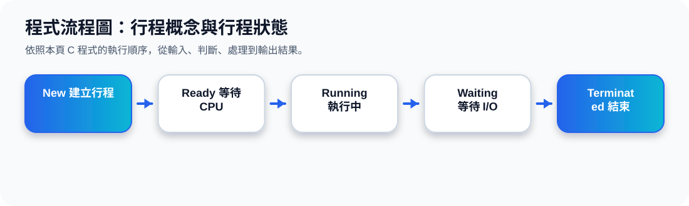

二、Program、Job、Process 的差異
核心觀念 Program 是寫好的程式檔；Job 是交給系統處理的一項工作；Process 則是程式被載入記憶體後正在執行的實體。
Program
被動存在，尚未執行。
Job
等待 OS 安排資源。
Process
有狀態、記憶體與 PCB。
考試常問：Program 是 passive entity；Process 是 active entity。
三、Process in Memory：行程在記憶體中的樣子
一個行程在記憶體中通常包含 text、data、heap、stack 等區域。Text 是程式碼，data 是全域變數，heap 是執行期間動態配置，stack 則保存函式呼叫與區域變數。
函式呼叫、區域變數、return address
動態配置的記憶體
全域變數、靜態資料
程式碼 instruction code
為什麼要分區？
因為不同資料的生命週期與用途不同。程式碼通常固定；heap 會動態成長；stack 會隨著函式呼叫進出而改變。
簡單記法：Text 放程式碼，Data 放全域資料，Heap 放 new/malloc，Stack 放函式呼叫。
四、Process State：行程狀態轉換
行程執行時會在不同狀態之間轉換。最重要的是 Ready、Running、Waiting 三個狀態：Ready 等 CPU，Running 正在用 CPU，Waiting 等 I/O 或事件。
行程狀態動畫
五、PCB：Process Control Block
PCB 是作業系統用來記錄行程資訊的資料結構。只要 OS 想暫停、恢復或排程一個行程，就需要 PCB 保存目前狀態。
PCB 的作用動畫
程式流程圖與流程講解
程式流程圖：行程概念與行程狀態

流程講解
可編輯 C 程式範例與線上編輯器
可編輯 C 程式：行程概念與行程狀態
這段程式依照上方流程圖設計，包含中文註解，適合貼到線上編輯器直接執行與修改。
程式題目完整教學內容
程式題目完整教學：行程概念與行程狀態
一、程式題目講解
用字串狀態變化模擬 Process State Transition。
核心觀念是 New、Ready、Running、Waiting、Terminated 的轉換順序，以及 I/O 等待後會回到 Ready。
二、完整程式碼
以下程式碼可直接複製到 C 語言線上編譯器執行。程式中已加入中文註解，說明主要變數、判斷流程與輸出目的。
#include <stdio.h>
/*
主題 9：行程概念與行程狀態
功能：模擬 process state transition。
*/
int main(void) {
const char *state = "New";
printf("State: %s\n", state);
state = "Ready";
printf("建立完成，進入 %s\n", state);
state = "Running";
printf("取得 CPU，進入 %s\n", state);
state = "Waiting";
printf("等待 I/O，進入 %s\n", state);
state = "Ready";
printf("I/O 完成，回到 %s\n", state);
state = "Terminated";
printf("執行完成，進入 %s\n", state);
return 0;
}三、程式執行結果
State: New
建立完成，進入 Ready
取得 CPU，進入 Running
等待 I/O，進入 Waiting
I/O 完成，回到 Ready
執行完成，進入 Terminated結果說明：核心觀念是 New、Ready、Running、Waiting、Terminated 的轉換順序，以及 I/O 等待後會回到 Ready。 程式依照設定的資料與控制流程逐步輸出，因此可以從結果看到每個步驟的執行順序與狀態變化。
四、程式流程圖與流程圖說明
本頁上方已提供對應的程式流程圖，圖中以「開始、資料設定、條件判斷、重複處理、輸出結果、結束」呈現程式執行順序。
程式從 New 開始，依序改變 state 指標並輸出每次狀態轉換，最後進入 Terminated。
五、重要函數與語法說明
const char *state 用來指向狀態文字；多次指定 state 模擬狀態轉換；printf() 顯示每個狀態。
六、整體說明
本題的學習重點是把作業系統概念轉成可觀察的 C 程式流程。學生應先理解題目概念，再對照程式碼、流程圖與執行結果，掌握變數設定、條件判斷、迴圈處理與輸出結果之間的關係。